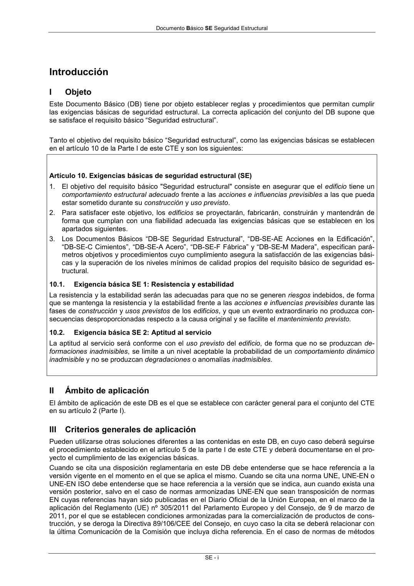

DB-SE Seguridad estructural · edición 2019-12-20 · capa oficial
Documento DB-SE-oficial · SHA-256 del PDF ec1fbfc51b28c4d62667aec480585b76fe31727ccf1615015a5d2d2677763f8f
Copia fiel del PDF fuente · Fuente oficial
Ficha de la disposición en la fuente oficial
Formatos: JSON del segmento · Markdown
III Criterios generales de aplicación Pueden utilizarse otras soluciones diferentes a las contenidas en este DB, en cuyo caso deberá seguirse el procedimiento establecido en el artículo 5 de la parte I de este CTE y deberá documentarse en el pro- yecto el cumplimiento de las exigencias básicas. Cuando se cita una disposición reglamentaria en este DB debe entenderse que se hace referencia a la versión vigente en el momento en el que se aplica el mismo. Cuando se cita una norma UNE, UNE-EN o UNE-EN ISO debe entenderse que se hace referencia a la versión que se indica, aun cuando exista una versión posterior, salvo en el caso de normas armonizadas UNE-EN que sean transposición de normas EN cuyas referencias hayan sido publicadas en el Diario Oficial de la Unión Europea, en el marco de la aplicación del Reglamento (UE) nº 305/2011 del Parlamento Europeo y del Consejo, de 9 de marzo de 2011, por el que se establecen condiciones armonizadas para la comercialización de productos de cons- trucción, y se deroga la Directiva 89/106/CEE del Consejo, en cuyo caso la cita se deberá relacionar con la última Comunicación de la Comisión que incluya dicha referencia. En el caso de normas de métodos Documento Básico SE Seguridad Estructural SE - ii de ensayo referenciadas en las normas armonizadas, debe aplicarse la versión incluida en las normas armonizadas UNE-EN citadas anteriormente. Las normas recogidas en este DB podrán ser sustituidas por otras de las utilizadas en cualquiera de los otros Estados miembros de la Unión Europea, o que sean parte del Acuerdo sobre el Espacio Económico Europeo, y en aquellos estados que tengan un acuerdo de asociación aduanera con la Unión Europea, siempre que se demuestre que poseen especificaciones técnicas equivalentes.
